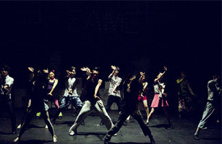

건강증진 사업
Home > 센터소개 > 프로그램 소개 > 교육지원 사업 > 한국민요
100세 율동 소개

진행일정
매주 수요일
진행내용
스포츠레저학과 학생들이 시니어를 대상으로 전문적 체조 및
율동을 지도하며, 간단한 댄스스포츠 수업도 함께 진행.워밍업
박수체조를 시작으로 총 3개의 트로트 곡을 선정하여 A, B, C
파트로 나누고 해당 파트 수업에는 곡에 맞는 건강율동을 통해
어르신의 활기 증진. 또한, 댄스스포츠 수업과 수업 종료 후 간단한
스트레칭으로 몸의 미세근육을 활성화시킬 수 있는 주차별
프로그램 준비.